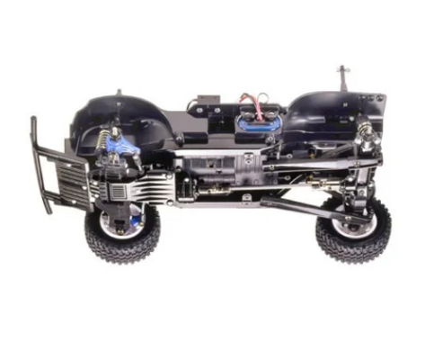

タミヤ CC-01

引用元画像：タミヤ公式サイト
📋 基本情報
| メーカー | タミヤ（Tamiya） |
|---|---|
| 機種名 | CC-01 |
| 型番 | 58579（ランドフリーダー）、58588（トヨタ FJクルーザー）、58663（トヨタ ハイラックス エクストラキャブ）など |
| 発売時期 | 2014年 |
| 生産状況 | 生産終了 |
| カテゴリー | ラジコンカー（1/10スケール 電動RCカー） |
| サブカテゴリー | クロスカントリー・クローラー（オフロード入門～中級者向け） |
📏 シャーシスペック
| 全長 | 445mm |
|---|---|
| 全幅 | 193mm |
| 全高 | 181mm |
| 車体重量 | 約1330g（RCメカ、バッテリー含まず） |
| ホイールベース | 242mm（S）/ 252mm（M）/ 267mm（L）- 3種類から選択可能 |
| トレッド | 前後とも163mm |
| タイヤ幅/径 | 前後とも29/78mm |
| フレーム | ラダーフレーム風バスタブタイプ |
⚙️ 駆動系
| 駆動方式 | 縦置きモーター・シャフトドライブ4WD（フルタイム4WD） |
|---|---|
| デフギヤ方式 | 前後：3ベベル |
| リヤデフ | ロック仕様に組み立て可能（悪路での高い走破性） |
| ギヤ比 | 1:14.67 |
| モーター | RS540タイプ（フロントミッドに縦置き配置） |
| スピードコントローラー | ESC仕様（別売） |
🔧 サスペンション
| フロント形式 | ダブルウィッシュボーンタイプ（アッパーIアーム、ロワーHアーム） |
|---|---|
| リヤ形式 | 4リンクリジッド |
| ダンパー | 前後ともCVAオイルダンパー（4本装備） |
| 特徴 | ショック吸収性に優れた実車ライクなサスペンション構造 |
💡 特徴
実車ライクな4WDクロスカントリーシャーシ
- 軽く高い強度を持つバスタブフレーム
- フロントミッドにモーター縦置き配置
- ギヤを介してフロントへ、プロペラシャフトを介してリヤへパワー伝達
- フルタイム4WDで走る場所を選ばないタフな走行性能
高い走破性と調整機能
- 前後にデフギヤを装備
- リヤアクスル内のデフはロック仕様に組み立て可能
- 悪路での高い走破性がコントロールの楽しさを広げる
- ホイールベース3種類（S、M、L）から選択可能
オールマイティな走行性能
- クロスカントリー走行からオンロード走行まで幅広く対応
- スケール感の高いリアルボディと実感シャーシ
- 初心者から中級者まで楽しめる設計
豊富なボディバリエーション
- ランドフリーダー（80年代ピックアップトラック風）
- トヨタ FJクルーザー（アメリカ仕様）
- トヨタ ハイラックス エクストラキャブ
- いすゞ ミュー
- VW アマロック
- VW レース・トゥアレグ
- その他多数のスケールボディに対応
🔧 ぽすとそに工房での修理実績
修理難易度
★☆☆☆☆（非常に簡単、初心者でも修理可能）
よくある故障・注意点
- ステアリングが切れない現象（持病）
- ステアリングリンクが撓んでタイヤまで力が伝わりにくい
- サーボトルク不足（6kg級では効果が薄い）
- ホイールベース変更時のパーツ交換が必要
修理のポイント
- ステアリング系の強化（等長リンク化推奨）
- サーボは10kg級トルクのものを推奨
- リヤデフのロック調整で走破性向上
- CVAオイルダンパーの定期メンテナンス
その他の特徴
- 組み立てやすく整備性に優れる
- 実車ライクなシャーシ構造でスケール感が高い
- オプションパーツが豊富（サードパーティ含む）
- ストローク増加キットなどでカスタマイズ可能